| Author(s) | Product Version | Date |
|---|---|---|
0.0.3-alpha2 |
July-2016 |
Copyright ©2015-2016, All Rights Reserved, http://www.mycontroller.org
| Author(s) | Product Version | Date |
|---|---|---|
0.0.3-alpha2 |
July-2016 |
Copyright ©2015-2016, All Rights Reserved, http://www.mycontroller.org
MyController.org is a controller for the sensors world! Primarily it was developed to MySensors.org project. Later changed it’s architecture to support other projects also. Currently supports for MySensors and Sparkfun. Considered system resources in mind on development. As a result even we can run it on Raspberry PI very first model.
You can control/monitor various sensors with this controller. As this controller is a web application server you can access from anywhere if you have internet/intranet connection. It has various features like, firmware control for nodes, powerful rule engine, timers, custom scripts support(JavaScript, Python, Ruby, Groovy, etc.,). For further details dig into each section.
| If you think MyController.org helps you someway on your daily life, kindly consider to donate something to MyController. Your donation will help MyController to keep growing. Thank you! |
| Do you have question? Post your questions on forum or you can ping at gitter chat |
MyController.org is Java based web application server.
Web Server : TJWS
REST-API : Jboss RestEasy
Database : h2 database
MQTT Broker : andsel/moquette
Front-end : AngularJS, PatternFly
MyController.org server is very lightweight, It required very less resource,
Disk : 50 MB (may require more space, when we store metrics data for long time)
RAM : 100 MB
Java SE : 1.8 or later
| Test done up to 10 nodes and 30 sensors with the above configuration._ |
We can run it in any platform which supports Java. So far it has been tested in the following platforms, Kindly share your success stories on other platforms we can add it here.
Linux
Windows
Raspberry PI (Oracle Java recommend)
Executable download is available in two formats, zip and tar.gz. You can download suitable compressed flavor of yours.
Kindly visit releases page of MyController.org to get latest version.
Extract downloaded bundle where exactly do you want to run.
Configuration file is located in mycontroller/conf
File name: mycontroller.properties
mcc.tmp.location=tmp/You can change default location and file name. This file used as server temporary location and for the operation such as backup, restore, etc.,
For supports only for H2DB, We have a request to support other RDMS databases
mcc.db.h2db.location=../conf/mycontroller (1)| 1 | You can change default location and file name. File will be stored with the file extension
.h2.db. Do not add file extension here. |
Database username and password are pre-configured. We cannot change it for now.
Username: mycontroller and password is mycontroller
mcc.web.bind.address=0.0.0.0 (1)
mcc.web.enable.https=true (2)
mcc.web.http.port=8443 (3)
mcc.web.file.location=../www/ (4)
mcc.web.ssl.keystore.file=../conf/keystore.jks (5)
mcc.web.ssl.keystore.password=mycontroller (5)
mcc.web.ssl.keystore.type=JKS (5)| 1 | bind interface address. by default it will bind with all the available interface. |
| 2 | Enable/disable https. Only one protocol supported at a time. true - https, false - http. |
| 3 | Port number of http/https to access MyController.org server. |
| 4 | web files location, no need to touch this one. |
| 5 | If https is enabled these fields are mandatory. |
Default URL: https://<ip>:8443 (ex: https://localhost:8443)
Default username/password: admin/admin
|
Important: Change default mcc.web.ssl.keystore.file and mcc.web.ssl.keystore.password and https protocol is
recommended
Configuration File Name: logback.xml
Default log file location: logs/mycontroller.log
When to change log level, you can change it for specific package. Supported log levels are
TRACE - It prints all the available logs
DEBUG - It prints only debug, info, warn and error logs
INFO - It prints only info, warn and error logs
WARN - It prints only warn and error logs
ERROR - It prints only error logs
Executable scripts are located under mycontroller/bin/
Linux
Start : ./start.sh
Stop : ./stop.sh
Windows
Start : Double click on start.bat
Stop : Ctrl+C
Other Platforms
Execute from 'mycontroller/bin/'
java -Xms8m -Xmx100m -Dlogback.configurationFile=../conf/logback.xml
-Dmc.conf.file=../conf/mycontroller.properties -cp "../lib/*" org.mycontroller.standalone.StartApp
Assigning -cp classpath might vary on platforms, kindly refer java documents to know for your platform
|

Enter valid username and password to log in to MyController.org server.
Default username is admin and password is admin
Menu divided in to two parts.
You can perform changing display language(locale), changing password, email of logged in user, logout actions
When you click on main menu you get list of sub menus list related to main menu.
You can see the following icons across pages.
 - Filters
- Filters
You change filter with available options.
Filter works with AND operation and case sensitive.
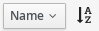 - Sort
you can sort based on fields listed in this menu
 - Ascending order
- Ascending order
 - Descending order
- Descending order
To change order click on this icon
 - View details
- View details
click this icon to know more about specified item
 - Actions
- Actions
page to page list of actions will be different
Select item(s) and perform action with this menu
Icons
 - Enabled
- Enabled
 - Disabled
- Disabled
- Up
- Down
 - Unavailable
- Unavailable
MyController supports multiple locales. You can change to your language by selecting top right corner of language menu.

Releases - take you to MyController.org releases page
Documents - take you to MyController.org documents page
Source code - take you to MyController.org source code page
Profile - take you to profile page. you can change password, email id and name.
Log out - safely log out from MyController.org server
MyController dashboard supports for many number of widgets. If you do not find suitable on for you, you can use custom widget and use scripts for your requirements.
You can keep any number of dashboards. By default maximum dashboard count is set as 5. You can change
this settings under Settings >> System >> MyController.
To remove a dashboard, select dashboard and click on Delete dashboard.
To add new widgets click on 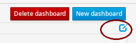 edit dashboard and select 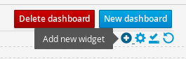
Type of widgets
Sensors
A sensor graphical view
Grouped sensors graph
Mixed sensors graph
Sensors bullet graph
Heatmap chart
Sensors custom button
Display image file
Groups
MyController time
Sunrise and Sunset time
News
Custom widget
Common settings across widgets
Title - widget title
Refresh time - refresh widget content, in seconds
You can select any number of sensors to be displayed on this widget.
You can limit number items per row by setting Items per row
When you want to show only one Sensor variable graph you can use this widget.
You can group similar type of Sensor variable with this widget.
In this example I have added all the Temperature sensor variables.

You can mix two types of sensors with this widget.
One will be shown in Y1 axis and another will be in Y2 axis

| There is an open issue on this widget |
Bullet graph used to watch current status, last value and average value.

Displays like this,

Heatmap chart used to show resources status in single with with different colors.
Buttons detail should be in JSON format.
To create json configuration error free way use http://www.jsoneditoronline.org/
We can include button names as HTML or icons(recommended: font awesome icons)
In configuration name and payload are mandatory fields.
btnType is optional and can be any one of default, primary, success,
info, warning, danger
Example json as follows,
[
{
"name": "<i class='fa fa-power-off'></i>",
"payload": "P",
"btnType": "danger"
},
{
"name": "<i class='fa fa-play'></i>",
"payload": "PL",
"btnType":"success"
},
{
"name": "<i class='fa fa-pause'></i>",
"payload": "PA",
"btnType":"warning"
},
{
"name": "1",
"payload": "1"
},
{
"name": "2",
"payload": "2"
},
{
"name": "3",
"payload": "3"
},
{
"name": "4",
"payload": "4"
},
{
"name": "5",
"payload": "5"
},
{
"name": "6",
"payload": "6"
},
{
"name": "7",
"payload": "7"
},
{
"name": "8",
"payload": "8"
},
{
"name": "9",
"payload": "9"
},
{
"name": "TXT",
"payload": "TXT",
"btnType":"primary"
},
{
"name": "0",
"payload": "0"
},
{
"name": "SUB",
"payload": "SUB",
"btnType":"primary"
}
]Example produces,

When you want to display image file from an url for from local disk you can use this widget.
This can be used when you are updating image file with some other services and want to show in MyController dashboard.

When you want to control you groups from dashboard, you can use this widget.

Displays MyController time where MyController server is running.
Displays Sunrise and Sunset time based on location settings

Add rss feed and displays news from the feed.
With the custom widget you can add on your interest. You have to write script for your custom widget.
When you mapped your sensors with room. You can access your room and get your sensors easily. You can perform actions also on sensor.
In topology graph you can see how the things connected in a quick view.
Realtime - How is connected on real time (for now mysensors only supports)
When you uncheck this option,shows how the things connected in MyController database.
By clicking on top legends, you can show hide type of resource.
You may notices that circle color for nodes and gateways, If node or gateways is UP shows in green, other wise based on status.
Mouse over to resource, displays status of resource as tooltip
Display names - Check/Uncheck to display/hide resources names
When you click refresh topology graph gets refreshed (also doing automatic refresh also)
You can filter resources on graph based on name
When you double click on resources it wll take you to resource details page.

Under resources you can do almost all actions related to sensors. can do actions on Gateways, Nodes, Sensors,Rules, Timers, Operations, Forward payload, Groups, Rooms.
You can add remove any number of gateways. Supports 2 type of networks
When you choose MySensors network type it supports 3 types
Serial gateway
Ethernet gateway
MQTT gateway
It support REST API. Polls on configured REST API for every N seconds with X limits of data.
It will not add duplicate data

Navigate to Gateways menu and click Add gateway.

Gateway supports multiple actions. Select an item from the list and choose the desired action.
Reload - reload operation performs stop and start of the gateways.
Reload can happen only for enabled gateways.
|
| When you delete gateway. All the resources belongs to the gateways will be removed permanently. Always do backup when you perform this kind of operation. |

Sends broadcast packet to all the node on this gateway. Will receive parent node details. Used in Topology page to show real time connection
Discover action supports only for MySensors
|

Under this page you can see node information’s like, Node EUI(Node Id), Node Name, Node Type, Firmware Version, Core lib Version, Battery Level, Assigned firmware, etc.,
By default Register nodes automatically will be enabled under Settings >> System >> MyController.
If this option is disabled, sensor data of the node will not be added in to MyController
until node Registration status changed to Registered.
You can also change a node Registration status to one of New, Registered or Blocked
|
Navigate to node page, by clicking  button you can add new node.
button you can add new node.
Delete - delete node
Erase configuration - Ask node to erase complete configuration.
Reboot - reboot the node
Upload firmware - Request node to get firmware update
Refresh nodes info - Requests presentation details from selected nodes
| When you delete a node. All the resources belongs to the node will be removed permanently. Always do backup when you perform this kind of operation. |
When you click  icon you will complete node details. includes battery usage report.
icon you will complete node details. includes battery usage report.
Before doing this action, firmware should be added in MyController.org. Refer Firmware section to add new firmware.
To update selected firmware in to selected node perform Reboot or Update firmware action.
Navigate to sensors Page. In this page you see sensor details like Gateway Id, Node EUI, Sensor Id, Name, Type, Variable Type, Last seen. You can add, edit and delete sensors from here.
We can add sensors in two methods, via node and manually. If node sends any data related to sensors and if the sensor detail is not available in MyController.org new sensor will added automatically. To add new sensor manually click on the buttom 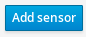
| If MyController.org receives any data related to sensor that you have added already will be overwritten. |

Delete - delete selected sensor
Edit - edit selected sensor
| Deletion sensor will delete all the data relevance to that sensor. We cannot recover it back. |
You can change sensor variable type, metric type, read only, graph type, etc., Go to sensors detail page.
Click on edit on Sensor variable 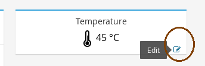
You can change the following settings,
Read only - Makes this variable read only, you cannot send payload.
Metric type - You can change metric type
None - When you do not want to record metric of a variable
Double - Used for double typed variables, like Temperature, Pressure, etc.,
Binary - Used for ON and OFF devices
Counter - Used to record counter type devices, like energy meters
Unit - You can change any type of units. Can select None of no units measurement
Offset - Only available for Double types metrics. You can enter + or - values.
When MyController.org receives a data from this variable this offset will be added with actual value.
When sending offset will be ignored(offset will not be included).
Priority - This value used to display variables on different locations.
When you give lowest number will get higher priority and vice versa.
Use global - When this option set, will use global graph settings.
Or you can override with your custom settings.
Formally called Alarms
Click on the button 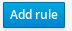 to add new rule.
Name - name of the rule definition
Enabled - enable/disable this rule definition
Disable when trigger - will be disabled automatically when triggers
Ignore duplicate - ignore subsequent triggers. Will trigger again at least condition should not satisfy once.
Resource - Select a resource, Supported resources,
Gateway - based on gateway status
Node - based on node status
Sensor variable - based on sensor variable value
Resources group - based on resources group status
Trigger when - is a condition.
Dampening - With dampening feature we can control trigger further. Types,
None - dampening option disabled
Consecutive - If the condition satisfies continuously for N occurrences.
Last N evaluations - If the condition mets N occurrences in X evaluations.
Active time - If the condition stays active in the specified time.
Operations - We can add any number of operations for a rule definition.
Rules are used to trigger set of Operations when a condition met the specification. MyController supports multiple conditions.
Compare
State
Script
String
Threshold
Threshold range
To add new Rule, Navigate to Resources >> Rules >> Add rule.

CompareWe can compare Sensor variable1 with Sensor variable2.
Example: Hall-temperature >= 20% outside-temperature
StateWith this condition we con monitor state of Binary type sensor variables, Node, Gateway and Resources group.
Example for Sensor variable
Example for Node
Example for Gateway
Example for Resources group

ThresholdWith this condition we can monitor Sensor variable values with a static value or with another Sensor variable value
Example with static value:

Example with another Sensor variable:

Threshold rangeWith this condition we can monitor Sensor variable value Is in range? or Is in outside range?
Threshold value low (1) - low value of threshold
Threshold value high (2) - high value of threshold
Include threshold low - When we check this field included (1) in boundary
Include threshold high - When we check this field included (2) in boundary
In range - When you check this box will be act as In range check, otherwise Out side range check
Example: X inside [10,56], X outside [45, 200]
Example for In range:

Example for Out side range:

Enable - enable selected items
Disable - disable selected items
Delete - delete selected item
Clone - clone the selected rule and create duplicate
Formally called Notifications
You can define any number of operations here. These operations will be mapped with Rules and Timers.
When a operation is in Disabled state,
Even it’s configured active Rules or Timers will no trigger disabled operations.
|
To add new operation click on the button 
Name - name of the notification
Enabled - enable/disable notification.
Public access - allow to use other users
Type - type of operations
Send payload - Do resource operations.
Request payload - Do resource operations.
Send SMS - send SMS
Send email - send email
Pushbullet note - send pushbullet note
Execute script - Executes mentioned script
Select resource and update payload
delay time in seconds update this field with delay time.
Using this option payload will send to the resource after x seconds of delay. If you do not want delay leave this field as blank.
on the payload you can use Special operations. Refer Special operations section for further details.
Select a sensor variable to request current payload
| This type supports only for MySensors |
For SMS we can use Plivo or Twilio vendors. When you create trail account you will get some credit.
To use SMS notifications you should configure either Plivo or Twilio SMS API settings
under Settings-→Notifications-→SMS.
Phone numbers - Give destination numbers with '+' with country code then mobile number without any space. If you want to give more than one number use comma(,)
Custom message - If you leave this field blank, default message will be generated.
===== Send email
To send email, SMTP email settings should be configured under "Settings-→Notifications-→Email"
Subject - subject of this email. Mandatory field. You can apply keys for this filed.
Email(s) - list of email address with comma(,) separated.
Email subject as well as body message supports for `key’s
To send pushbullet note, Pushbullet settings should be configured under "Settings-→Notifications-→Pushbullet"
Devices - comma(,) separated device iden. If you leave blank will send to all the devices.
Title - Title of the pushbullet note. You can apply keys for this filed.
Custom message - You can add your own custom message. If you leave this field blank default message will be taken. You can apply keys for this filed.
SMS, Email, Pushbullet note supports for custom messages with keys. `key’s will be replaced with actual value on runtime.'
|
You can apply the following keys for this filed.
notification.ruleName - Rule definition name
notification.ruleCondition - Rule condition details
notification.actualValue - Actual value of the resource at the time of trigger
notification.triggeredAt - Rule trigger time
notification.operationName - Operation name
Custom message example: Inside temperature goes too high! Current temperature is ${notification.actualValue}
While defining payload you can assign following special operations, All the special operation reads last received/sent value from target senor and doing this operation on top of that value and sends to target sensor.
By assigning the value: Toggle You can select this operation. It is doing toggle operation.
This will be useful for 'BINARY' devices. For example if switch is ON it will be turned OFF vise versa.
By assigning the value: ++ You can select this operation. Adding 1 with the value.
Example: last rx/tx value is 45, on resulting this operation will send 46 to target sensor.
By assigning the value: -- You can select this operation. Subtracting 1 with the value.
Example: last rx/tx value is 45, on resulting this operation will send 44 to target sensor.
By assigning the value: +3 You can select this operation. Here + meant for addition and 3 is the value should add.
Example: last rx/tx value is 45, on resulting this operation will send 48 to target sensor.
By assigning the value: -4 You can select this operation. Here - meant for addition and 3 is the value should add.
Example: last rx/tx value is 45, on resulting this operation will send 48 to target sensor.
By assigning the value: *2 You can select this operation. Here * meant for multiplication and 2 is the value should multiple.
Example: last rx/tx value is 45, on resulting this operation will send 90 to target sensor.
By assigning the value: /3 You can select this operation. Here / meant for division and 3 is the value should divide by.
Example: last rx/tx value is 45, on resulting this operation will send 15 to target sensor.
By assigning the value: %4 You can select this operation. Here % meant for modulus and 3 is the value used for modulus.
Example: last rx/tx value is 45, on resulting this operation will send 1 to target sensor.
By assigning the value: start You can select this operation.
On this operation target resource will be started.
By assigning the value: stop You can select this operation.
On this operation target resource will be rebooted.
By assigning the value: reboot You can select this operation.
On this operation target resource will be rebooted.
By assigning the value: reload You can select this operation.
On this operation target resource will be rebooted.
By assigning the value: enable You can select this operation.
On this operation target resource will be enabled.
By assigning the value: disable You can select this operation.
On this operation target resource will be disabled.
By assigning the value: ON You can select this operation.
On this operation target resource will be ON.
By assigning the value: OFF You can select this operation.
On this operation target resource will be OFF.
MyController.org using Sundial scheduler which foked from Quartz Scheduler
With the timer you can schedule timely operations for resources which configurable in Operations.
Different types of timers are supported by MyController.org.
You can schedule a timer till seconds(via API only, in GUI supports only till minutes only except cron type). Means you can schedule a task for time 21:45:23 like that.
By Clicking button  you will be taken to add timer page.
you will be taken to add timer page.
Name - name of the timer
Enabled - enable/disable the timer
Timer type - type of the timer
Validity - validity of the timer. If you leave blank never get expired.
Operations - Select list of operations that you want to run when this timer triggers

Simple timer operates with Repeat interval and Repeat count. Specify repeat interval in seconds. If you want to run this job count less specify Repeact count as -1
Normal is a very basic and classic timer. You can select Normal in the type drop down.
Cron is for advanced users. It is simple and easy. Visit Quartz-Scheduler page for further detailed configuration
| Quartz-Scheduler cron supports from seconds. |
If your task based on Sunrise or Sunset you have to go with this option. Say you want to control your garden light based on your location sun rise and sun set time. You can use this option. You can specify time offset.
3 types of frequencies supported by MyController.org
Daily – you can select all the 7 days or day(s) only you want to run
Weekly – Select a day in week
Monthly – Select a day in month
Time format: HH:mm:ss
HH – hour in 24 hours format (0~23)
mm – minutes (0~59)
ss – seconds (0~59)
| For sunrise and sunset options "Time" will react differently. If you select After Sunrise and After Sunset time offset will be added with "Time" mentioned in task + "Sunrise" or "Sunset" time. If you select "Before Sunrise or Before Sunset" "Time" mentioned in task time offset will be subtracted from actual "Sunrise or Sunset" time. |
You may feel you do not want to run this job all the time and want to run only on particular window period. In that case you can select validity. You can select "Validity From" and "Validity To" or only either or nothing. If you do not select any validity that job will be treating like never end. If you select only "Validity From" job will run from that date and never end. If you select only "Validity To" that job will start immediately and will end on the specified date.
You can select N number of operations for a timer. All the operations will be executed when a timer triggers

You can forward the data received by this sensor to another sensor directly without any condition. This will be useful when you want to send your sensor data to multiple sensors. No need to do any code change on sensor side. Simply add an entry in MyController.org and be happy, MyController.org will take care rest of the things.
| This operation supported across gateways too. Which means you can forward data from one network to another network. |
To add new entry click on the button 

Delete - Delete selected entries
Edit - If there is a change required
Disable - Temporarily you do not want to forward
Enable - Enable disabled entries

Groups is the place where you want to keep group of resources and perform actions on all resources on single click.
Generally it needs On paylaod and Off payload for each resource.
To add new group click on the button 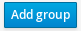 and update Name of the group and group Description
Supports for resource Gateway, Node and Sensor variable.
To add resources in to a groups click on  of the groups. Then click on 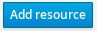
of the groups. Then click on 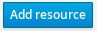
Start
Stop
Enable
Disable
Reload
Reboot

Rooms is used to organize your sensors as you see in your home/office. You can create nested rooms also.
Example: Floor1 >> Hall >> TV
To add new room click on the button  and update
and update Name of the room and room Description
If it is nested room, select parent room. You can select Sensor from here as well as from sensors page.
| A sensor can be mapped with only one room! |
You can perform set of actions here.

All available sensors will be listed here. You can perform any action on any sensor.
This board can be changed to List view (default) or in Card view.
You can change view by selecting menu on top right corner of the page.


You can send any type of message from here to your sensor. Goal of this page to send not supported types by MyController and user can do some manual test on sensors network
With status pages to can get status about your sensors and MyController. In simple word this is the place to debug the things.
About page lists quick details about MyController’s configurations.
System status page lists bit more about MyController different configurations like,
Java virtual machine specification
Operating system
Script engines
Lists detail about JVM. You can perform Run garbage collection from this page by clicking on 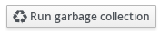

Gives detail about current operating system.
Gives detail about supported script engines. By default following script engines are shipped with MyController,
Oracle Nashorn - Supports to execute Java scripts
Groovy Scripting Engine - Supports to execute Groovy scripts
freemarker - It is template engine used across MyController
You can add any number of script engines. If it supports for JSR 223 specifications.

Download jar file and place it under mycontroller/lib/ and restart MyController services.
For example if you want to add Python support on MyController, you need to add Jython library.
Download jython-standalone-*.jar from Jython website.
Place it under mycontroller/lib/
Stop MyContorller
Start MyController
In this page you can understand whats going on about your sensors network. It a is good place to do debugging about your sensors.
By clicking Purge button on this page,
you can remove all existing logs or selected logs with filter.

In this page you can watch backend log file mycontroller/log/mycontroller.log from GUI.
Under utilities you can store scripts, templates, additional headers, variables repository, UID tags, firmwares, external serves details.

MyController supports for custom scripts, they can be used to perform any kind of operation
or in Rule. MyController gives set of API for your needs.
With this API’s you can query/set data in MyController.
Two types of scripts are available,
Condition
Operation
Condition scripts are used for Rule engine. If you are not satisfied with pre defined rule conditions you can write your own script.
Your script should return either true or false or inside script set mcResult variable as boolean value.
In python return true or false will not work. set your result in mcResult variable.
|
Operation scripts are used for other than Rule engine condition type. Can be used on Operation, Dashboard, etc.,
Script’s API: javadoc API’s are added in script environment. You can access any supported API’s with mcApi object.
Take an example I want to display last seen of node details in dashboard.
var myImports = new JavaImporter(java.io, java.lang, java.util); (1)
with(myImports) { (2)
var options = new HashMap(); (3)
//Sort by lastSeen.
options.put("orderBy", "lastSeen"); (4)
//Order by descending
options.put("order", "desc"); (5)
//Page limit, only 5 result
options.put("pageLimit", new Long(5)); (6)
//Get nodes data
var nodes = mcApi.node().getAll(options); (7)
}| 1 | Import required packages for our coding. JavaImporter is used to import packages.
You can import any numbe of packages with comma separated. |
| 2 | Add our imports with loop |
| 3 | Create a HashMap to add our query filter values. |
| 4 | Adding a filter orderBy as lastSeen |
| 5 | Adding another filter order as desc |
| 6 | Adding another filter pageLimit as 5 |
| 7 | Store queried results in the variable nodes, can be used in templates(refer templates section)
mcApi already binded with script engine, you can use it to query/set values from/to MyController. |
I want to print serial gateways on MyController log file.
import org.mycontroller.standalone.gateway.GatewayUtils.GATEWAY_TYPE (1)
def filters = [name: 'Serial-gateway', pageLimit: 10L, type: GATEWAY_TYPE.SERIAL] (2)
def queryResponse = mcApi.gateway().getAll(filters) (3)
mcApi.logger().info("Quesry Response:{}", queryResponse) (4)| 1 | Import GATEWAY_TYPE enum, will be used to filter |
| 2 | Create filter list with filter values, Filtering with gateway
name contains Serial-gateway (case sensitive), type as GATEWAY_TYPE.SERIAL
and limiting count on request as 10 10L with the key pageLimit |
| 3 | Calling MyController API(`mcApi.gateway().getAll(filters) `) with our filter |
| 4 | Printing result under mycontroller/log/mycontroller.log as INFO log. |
When log level set at ERROR, INFO logs will not be printed!
|
In this script we are getting gateways detail and printing in log file.
from java.util import HashMap (1)
from java.lang import Long (2)
options = {'pageLimit': Long(20)} (3)
gateways = mcApi.gateway().getAll(HashMap(options)) (4)
mcApi.logger().info("Quesry Response:{}", gateways) (5)| 1 | Import HashMap should be used to send filter queries |
| 2 | Import Long used to send java Long type |
| 3 | Create filter with pageLimit of 20 |
| 4 | Query MyController with McApi and store result in gateways |
| 5 | Print result in mycontroller/log/mycontroller.log file. |
To add new script click on  Enter
Enter Name of the script, Extension type, script type(Type) and script content.
You can select script from files also.
Once you have added script you may want to test, is it working as expected. To test script
Select your script and click on  from actions list.
You will get a page to feed bindings options as displayed here,
from actions list.
You will get a page to feed bindings options as displayed here,
You can feed script bindings and click on Run Result(json format)
will be displayed on the same page as follows,

script bindings should be in JSON format.
|

Templates are used to send email and in dashboard for custom widgets. MyController uses freemarker as template engine. Refer the docs for the complete format supports.
This template used to display nodes status on dashboard. To run this template you have to select example scripts that queries node status.
<table class="table table-hover table-bordered table-striped mc-table">
<thead>
<th>Status</th>
<th>EUI</th>
<th>Name</th>
<th>Type</th>
<th>Battery level</th>
<th>Last seen</th>
</thead>
<tbody>
<#list nodes.data as item> (1)
<tr>
<td class="text-center">
<#if item.state == "UNAVAILABLE"> (1)
<i class="pficon pficon-help text-color-gray fa-lg"></i>
<#elseif item.state == "DOWN">
<i class="pficon pficon-error-circle-o fa-lg"></i>
<#elseif item.state == "UP">
<i class="pficon pficon-ok fa-lg"></i>
</#if>
</td>
<td>${item.eui}</td>
<td>${item.name}</td>
<td>${item.type.text}</td> (3)
<#if item.batteryLevel??>
<td><span>${(item.batteryLevel)!"-"} %</span></td> (4)
<#else>
<td><span>-</span></td>
</#if>
<td><span uib-tooltip="{{${(item.lastSeen)!} | date:mchelper.cfg.dateFormat:mchelper.cfg.timezone}}" tooltip-placement="left" am-time-ago="${(item.lastSeen)!'Never'}"></span></td>
</tr>
</#list>
</tbody>
</table>| 1 | for loop in template, from script we will get nodes object and fetching items one by one. |
| 2 | if condition, checks node state (enum type) |
| 3 | we can call methods with .(DOT) notation. ${item.type.text} is equalient to item.getType().getText() |
| 4 | Ignore null and assign default value. |
To allow null you have to add ! at the end of statement >> ${(item.lastSeen)!},
If you want to put default value on null value >> ${(item.lastSeen)!"-"}
|
To add new template click on  and save with template
and save with template Name and Content as shown in syntax example
You may want to test your template immediately. For this go to list templates page and select your template and click on you will get a popup.
You have select supported script for this template. If script is not required for this template leave this as blank. And add json buindings if needed.
When you click Run selected script executed with Script bindings on back-end and
script out put will be passed to template. Final result will be displayed on the pop-up as shown below.
if you do not select any script, Script bindings directly passed to template engine.
When there is situation like you have different widgets available on different sites and you want to use
there own js or css along with MyController, here is the place to add those scripts and style sheets.
You can also add your own custom angular JS controllers

When you do changes in HTML additional header, once you saved the changes,
to reflect changes on your current browser session do browser refresh F5
|

With the support of variables repository you can keep some configurations here and use it across in scripts and templates.
Each reference has 4 fields, key, value, value2 and value3.
To add a variable click on  buttons and
buttons and

var variable = mcApi.variable().get("myKey"); (1)
variable.getKey() (2)
variable.getValue() (3)
variable.getValue2() (4)
variable.getValue3() (5)| 1 | Get variable called myKey |
| 2 | Get the key for this variable, must be myKey |
| 3 | Get value |
| 4 | Get value2 |
| 5 | Get value3 |
There is no field called value1. Do not try to call value1
|
By script calling sensors variables you need lot of info like gateway details, node details etc.,
To bypass this we can tag a sensor variable with String UID and called from your script with this UID
To add new entry click on 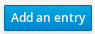 and follow,

var sensorVariable = mcApi.uidTag().getByUid("temperature-out"); (1)
mcApi.logger().info("Sensor variable Details: {}", sensorVariable); (2)| 1 | Get Sensor variable object with UID temperature-out |
| 2 | Print received object on logger file (mycontroller/log/mycontroller.log) |
You can control node firmware with the help of MYSBootloader or DualOptiboot-bootloader.
Your node should be running with the bootloader either MYSBootloader or DualOptiboot-bootloader
|
What you can do?
Upload new firmware
Change existing firmware to new latest
Maintain nodes firmware up to date
Each firmware is maintainable with Type and Version.
You can keep N number of version on each type.
Click on Type you will get firmware type page.
Clicking Add firmware type you can add new firmware type.
Id for the firmware type will be generated automatically.
If you leave 'Type Id' as blank.
|
Click on Version you will get firmware version page.
Clicking on Add firmware version you can add new firmware version.
While adding firmware version you can leave 'Version Id' as blank. Id will generated automatically.
If you have any requirement for specified id add it.
Id for the firmware version will be generated automatically.
If you leave 'Version Id' as blank.
|
When you click Firmwares on top menu, you will landed on firmwares page.
If you are in firmwares Type or Version page you will reach by clicking on
Clicking Add firmware you can add new firmware.
Select Firmware type and version from the pop-up and select .hex from your local computer.
Finally click Add. Your firmware is ready for actions.

When there is need to keep all your sensors metrics on external servers. You have to put an entry here.
Emoncms.org
Influxdb
Sparkfun [phant.io]
You can add any of the supported server on this page and map your resources with your server. MyController will take care rest of things.
To add external servers click on Add external server
Common fields across servers,
Name - Name it your server
Type - select your server type
URL - Your server url
Trust host - select trust host type
Key format - How your resource key should be formed,
Supported variables $nodeName, $nodeEui, $sensorName, $sensorId and $variableType
When your external server configured with SSL certificate,
connection will fail. To bypass SSL certificate use Any as Trust host
|
Write API key - get this key from Emoncms.org server account page.
Username - username of influxdb
Password - Password of influxdb
Database - Database name of influxdb
Tags - You can assign any number of tags with comma separated.
You can leave username and password fields as blank if you do not have
|

Public key - Public key of your Sparkfun account
Private key - Private key of your Sparkfun account
You have to create Sparkfun account with only one field.
If you have more than one field sending will failed. Because MyController sends only one sensor variable data with timestamp.
Kindly note key is case sensitive in Sparkfun.
|


Once you have created External servers, now it’s time to configure what are
resources data to be sent to external server and to who are all.
For all these you have to configure Resources data
Supports for 4 types of resources,
Gateway - Sends all the Sensor variable’s data under this `Gateway to external server(s)
Node - Sends all the Sensor variable’s data under this `Node to external server(s)
Sensor - Sends all the Sensor variable’s data under this `Sensor to external server(s)
Sensor variable - Sends only this data to external server(s)
To add new entry click on Add Resource and follow as shown bellow,

You can disable sending data at any time. We can do disable in two locations.
If you do not want to send data to particular server, do disable on External servers page.
If you do not want to send particular resource data, do disable on Resources data page
|
This is the location where you can control various global settings.
You can change your logged in user Full name, Email, Password here.

Under system, you can see location settings and MyController settngs
You can see Sunrise and Sunset on Rule. Time will be calculated based on this location settings.
By clicking Update current location will be taken from your browser and will be updated.
You need internet connection to get current location from browser.
however to calculate sunrise and sunset time, internet is not required.
|
Here you can set meny settings, which used globally.

Nodes alive check interval - Every 30 minutes (default) once nodes alive status will be calculated.
MyController will send Ping to all the nodes. If there is not data for last 30 minutes,
node will be marked as down. You can change this interval.
Execute discover interval - Every 30 minutes once this util will be executed.
By executing this util real time topology page will be updated.
Units configuration - You have to define here that you want to use Metric or Imperial
Register nodes automatically - When you disable this button, when new nodes added automatically,
Registration status will be kept as New, data will not be logged from this node until the
registration status changed to Registered.
Resource logs level - You can define here, what time of sensors logs should be captured.
Maximum dashboards allowed - You can change this settings when you required more than 5 dashboards.
Table rows limit - This settings used across all the tables on MyController
Global page refresh time - Where and all auto page refresh is happening, this interval will be used.
Language - MyController supports many locale. You can set parmenantely your language here.
Time format - You can set MyController should you 12 hours format or 24 hours format
Grant access to chield resources - When you create role, if you assign a Gateway
do you want to control only the Gateway or all the resources on the Gateway.
This is applicable for nodes too.
Widget image file disk location - There is widget on dashboard display static image.
Local images are taken from this location. Due to JVM memory issue. There is a restriction on image size. allowed size only up to 7 MB.
Login message - You can sent your own login message. This message will be displayed on login page.
| Don’t you see you language? Or not fully changed to your locale? Please contribute on Locale project |
Resource logs level is different than MyController logs. To change MyController log level change it on mycontroller/conf/logback.xml
|
In this page you can set Email, SMS and Pushbullet access settings.
SMTP host - Enter SMTP host of your emails service provider
SMTP port - port number of email server
From address - When sending email from MyController this address will be added as from address
Enable SSL - If your email server supports for SSL, you should enable this option
and select use only SSL or STARTTLS
SMTP username - username for your email server
SMTP password - password for your email server
Before adding email server settings detail. You can test settings by
clicking on Test connection. This action will send an email to your From address.
|

Access token - add access token from your Pushbullet account and click on save.
Other settings will be added automatically.

Vendor - Currently supports for Plivo and Twilio. You can choose either for SMS service.
Auth id/sid - Get from your vendor account details
Auth token - Get from your vensor account details
From phton number - number displayed as from phone number.

MQTT broker settings can be changed here. You can do enable or disable MQTT broker without restarting MyController server.
Status - Current status of MQTT broker. You can do enable or disable
Allow anonymous - Allow users without authentication(no user name and password)
Bind address - Broker service should be binded with the IP address. 0.0.0.0 meant bind will all interfaces
HTTP port - MQTT broker HTTP/TCP port
Websocket port - websocket port of MQTT broker
Under metrics settings you can change graph settings and data retention settings
You can change global graph settings here.
Enable Min/Max - Enable or disable Minimum and Maximum graph settings. If you disable this. shows only Average.
Default time range - default time range in all graphs
Battery - battery graph settings
Sensor variables - set sensor variables graph settings for each type.

This settings tell how long you want to keep data in MyController.

Raw data - how long do you want to keep raw data
One minute data - Every one minute Raw data will be calculated
Five minutes data - Five minutes data will be calculated from One minute data
One hour data - One hour data will be calculated from Five minutes data
Six hours data - calculated from One hour data
Twelve hours data - calculated from Six hours data
One day day - calculated from Twelve hours data
Before do changes in Data retention settings, do a MyController backup.
If anything you set wrongly can lead data loss. You can avoid this by taking backup.
|
On this page you can set default firmware.

Default firmware - select a default firmware, When there is request from MySensors network for firmware. this default firmware will be sent
Enable default on no firmware - When there is request for specified firmware
and that firmware is not available in system send default firmware when this option is enabled.
You can map `Sensor variable’s for each sensor types. This can be changed based on your requirement.
You can add/edit/remove users.
To add new user click on Add user.
You can assign roles from here or on roles page.

3 types of roles supported by MyController.
Super admin
User
MQTT user
Super admin user can do anything on the controller. Only one super admin role
created by controller on installation and you cannot create any new role with Super admin power.
Do not delete Super admin role. If you delete Super admin role, you cannot login.
|
You can add any number of user role(s) with different access. You can assign resources for access when user logged in with this role.
You can add any user for MQTT authentication. Also you can restrict topics to subscribe and publish.

You can do backup and restore from here. By clicking Run backup,
backup will be triggered and stored on backup file location. can be changed on backup settings.
Manual backup always starts with on-demand_*
You can set automatic backup on clicking Settings on backup page.
Backup location - location where do you want to keep backup files.
Status - do ON or OFF automatic backup
Backup file prefix - on automatic backup this prefix will be added on file name.
Backup every - do backup every Minutes, Hours or Days
Retain maximum # - Retain maximum number automatic backups. For example if you set 2, only recent 2 automatic backups only kept.
Retain maximum # settings not applicable for manual backup files.
|
To do restore a backup file, select a backup file and click on Restore on actions menu. Restore should be triggered immediately.
After a successful restore you have to start the server manually from back-end.
You have to check restore status on mycontroller/log/mycontroller.log.
|
MyController.org is an Open Source project. You can contribute/download source code from Github repository
Are you facing issue? Wan to file new feature request? Want to give ideas? You are welcome to Github Issues page
Apache License
Version 2.0, January 2004
http://www.apache.org/licenses/
TERMS AND CONDITIONS FOR USE, REPRODUCTION, AND DISTRIBUTION
1. Definitions.
"License" shall mean the terms and conditions for use, reproduction,
and distribution as defined by Sections 1 through 9 of this document.
"Licensor" shall mean the copyright owner or entity authorized by
the copyright owner that is granting the License.
"Legal Entity" shall mean the union of the acting entity and all
other entities that control, are controlled by, or are under common
control with that entity. For the purposes of this definition,
"control" means (i) the power, direct or indirect, to cause the
direction or management of such entity, whether by contract or
otherwise, or (ii) ownership of fifty percent (50%) or more of the
outstanding shares, or (iii) beneficial ownership of such entity.
"You" (or "Your") shall mean an individual or Legal Entity
exercising permissions granted by this License.
"Source" form shall mean the preferred form for making modifications,
including but not limited to software source code, documentation
source, and configuration files.
"Object" form shall mean any form resulting from mechanical
transformation or translation of a Source form, including but
not limited to compiled object code, generated documentation,
and conversions to other media types.
"Work" shall mean the work of authorship, whether in Source or
Object form, made available under the License, as indicated by a
copyright notice that is included in or attached to the work
(an example is provided in the Appendix below).
"Derivative Works" shall mean any work, whether in Source or Object
form, that is based on (or derived from) the Work and for which the
editorial revisions, annotations, elaborations, or other modifications
represent, as a whole, an original work of authorship. For the purposes
of this License, Derivative Works shall not include works that remain
separable from, or merely link (or bind by name) to the interfaces of,
the Work and Derivative Works thereof.
"Contribution" shall mean any work of authorship, including
the original version of the Work and any modifications or additions
to that Work or Derivative Works thereof, that is intentionally
submitted to Licensor for inclusion in the Work by the copyright owner
or by an individual or Legal Entity authorized to submit on behalf of
the copyright owner. For the purposes of this definition, "submitted"
means any form of electronic, verbal, or written communication sent
to the Licensor or its representatives, including but not limited to
communication on electronic mailing lists, source code control systems,
and issue tracking systems that are managed by, or on behalf of, the
Licensor for the purpose of discussing and improving the Work, but
excluding communication that is conspicuously marked or otherwise
designated in writing by the copyright owner as "Not a Contribution."
"Contributor" shall mean Licensor and any individual or Legal Entity
on behalf of whom a Contribution has been received by Licensor and
subsequently incorporated within the Work.
2. Grant of Copyright License. Subject to the terms and conditions of
this License, each Contributor hereby grants to You a perpetual,
worldwide, non-exclusive, no-charge, royalty-free, irrevocable
copyright license to reproduce, prepare Derivative Works of,
publicly display, publicly perform, sublicense, and distribute the
Work and such Derivative Works in Source or Object form.
3. Grant of Patent License. Subject to the terms and conditions of
this License, each Contributor hereby grants to You a perpetual,
worldwide, non-exclusive, no-charge, royalty-free, irrevocable
(except as stated in this section) patent license to make, have made,
use, offer to sell, sell, import, and otherwise transfer the Work,
where such license applies only to those patent claims licensable
by such Contributor that are necessarily infringed by their
Contribution(s) alone or by combination of their Contribution(s)
with the Work to which such Contribution(s) was submitted. If You
institute patent litigation against any entity (including a
cross-claim or counterclaim in a lawsuit) alleging that the Work
or a Contribution incorporated within the Work constitutes direct
or contributory patent infringement, then any patent licenses
granted to You under this License for that Work shall terminate
as of the date such litigation is filed.
4. Redistribution. You may reproduce and distribute copies of the
Work or Derivative Works thereof in any medium, with or without
modifications, and in Source or Object form, provided that You
meet the following conditions:
(a) You must give any other recipients of the Work or
Derivative Works a copy of this License; and
(b) You must cause any modified files to carry prominent notices
stating that You changed the files; and
(c) You must retain, in the Source form of any Derivative Works
that You distribute, all copyright, patent, trademark, and
attribution notices from the Source form of the Work,
excluding those notices that do not pertain to any part of
the Derivative Works; and
(d) If the Work includes a "NOTICE" text file as part of its
distribution, then any Derivative Works that You distribute must
include a readable copy of the attribution notices contained
within such NOTICE file, excluding those notices that do not
pertain to any part of the Derivative Works, in at least one
of the following places: within a NOTICE text file distributed
as part of the Derivative Works; within the Source form or
documentation, if provided along with the Derivative Works; or,
within a display generated by the Derivative Works, if and
wherever such third-party notices normally appear. The contents
of the NOTICE file are for informational purposes only and
do not modify the License. You may add Your own attribution
notices within Derivative Works that You distribute, alongside
or as an addendum to the NOTICE text from the Work, provided
that such additional attribution notices cannot be construed
as modifying the License.
You may add Your own copyright statement to Your modifications and
may provide additional or different license terms and conditions
for use, reproduction, or distribution of Your modifications, or
for any such Derivative Works as a whole, provided Your use,
reproduction, and distribution of the Work otherwise complies with
the conditions stated in this License.
5. Submission of Contributions. Unless You explicitly state otherwise,
any Contribution intentionally submitted for inclusion in the Work
by You to the Licensor shall be under the terms and conditions of
this License, without any additional terms or conditions.
Notwithstanding the above, nothing herein shall supersede or modify
the terms of any separate license agreement you may have executed
with Licensor regarding such Contributions.
6. Trademarks. This License does not grant permission to use the trade
names, trademarks, service marks, or product names of the Licensor,
except as required for reasonable and customary use in describing the
origin of the Work and reproducing the content of the NOTICE file.
7. Disclaimer of Warranty. Unless required by applicable law or
agreed to in writing, Licensor provides the Work (and each
Contributor provides its Contributions) on an "AS IS" BASIS,
WITHOUT WARRANTIES OR CONDITIONS OF ANY KIND, either express or
implied, including, without limitation, any warranties or conditions
of TITLE, NON-INFRINGEMENT, MERCHANTABILITY, or FITNESS FOR A
PARTICULAR PURPOSE. You are solely responsible for determining the
appropriateness of using or redistributing the Work and assume any
risks associated with Your exercise of permissions under this License.
8. Limitation of Liability. In no event and under no legal theory,
whether in tort (including negligence), contract, or otherwise,
unless required by applicable law (such as deliberate and grossly
negligent acts) or agreed to in writing, shall any Contributor be
liable to You for damages, including any direct, indirect, special,
incidental, or consequential damages of any character arising as a
result of this License or out of the use or inability to use the
Work (including but not limited to damages for loss of goodwill,
work stoppage, computer failure or malfunction, or any and all
other commercial damages or losses), even if such Contributor
has been advised of the possibility of such damages.
9. Accepting Warranty or Additional Liability. While redistributing
the Work or Derivative Works thereof, You may choose to offer,
and charge a fee for, acceptance of support, warranty, indemnity,
or other liability obligations and/or rights consistent with this
License. However, in accepting such obligations, You may act only
on Your own behalf and on Your sole responsibility, not on behalf
of any other Contributor, and only if You agree to indemnify,
defend, and hold each Contributor harmless for any liability
incurred by, or claims asserted against, such Contributor by reason
of your accepting any such warranty or additional liability.
END OF TERMS AND CONDITIONS
APPENDIX: How to apply the Apache License to your work.
To apply the Apache License to your work, attach the following
boilerplate notice, with the fields enclosed by brackets "{}"
replaced with your own identifying information. (Don't include
the brackets!) The text should be enclosed in the appropriate
comment syntax for the file format. We also recommend that a
file or class name and description of purpose be included on the
same "printed page" as the copyright notice for easier
identification within third-party archives.
Copyright {yyyy} {name of copyright owner}
Licensed under the Apache License, Version 2.0 (the "License");
you may not use this file except in compliance with the License.
You may obtain a copy of the License at
http://www.apache.org/licenses/LICENSE-2.0
Unless required by applicable law or agreed to in writing, software
distributed under the License is distributed on an "AS IS" BASIS,
WITHOUT WARRANTIES OR CONDITIONS OF ANY KIND, either express or implied.
See the License for the specific language governing permissions and
limitations under the License.Copyright ©2015-2016, All Rights Reserved, http://www.mycontroller.org